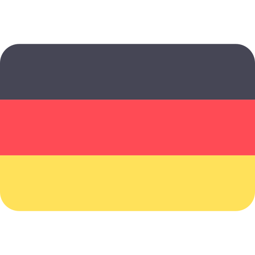
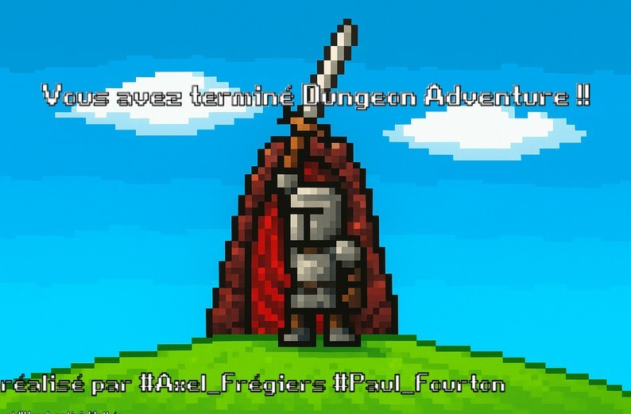
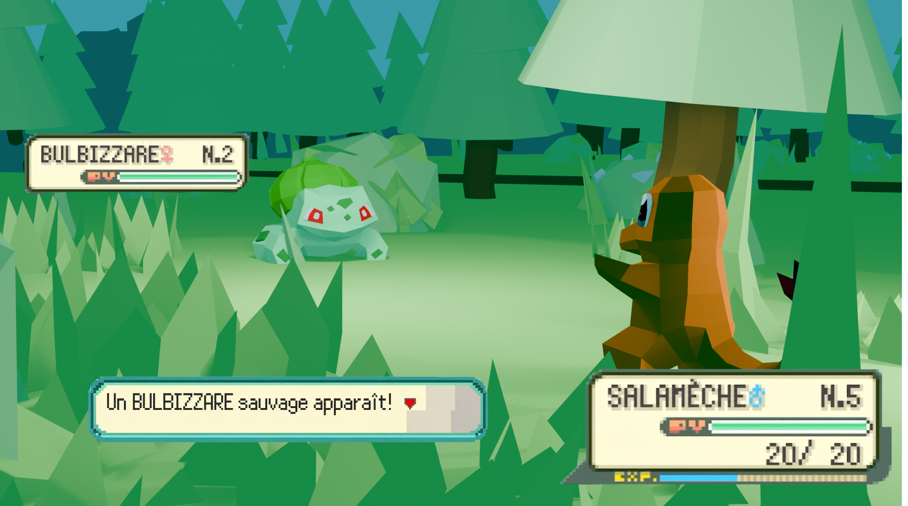
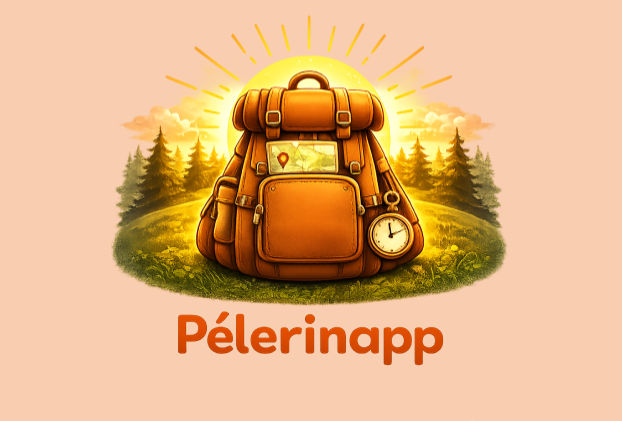
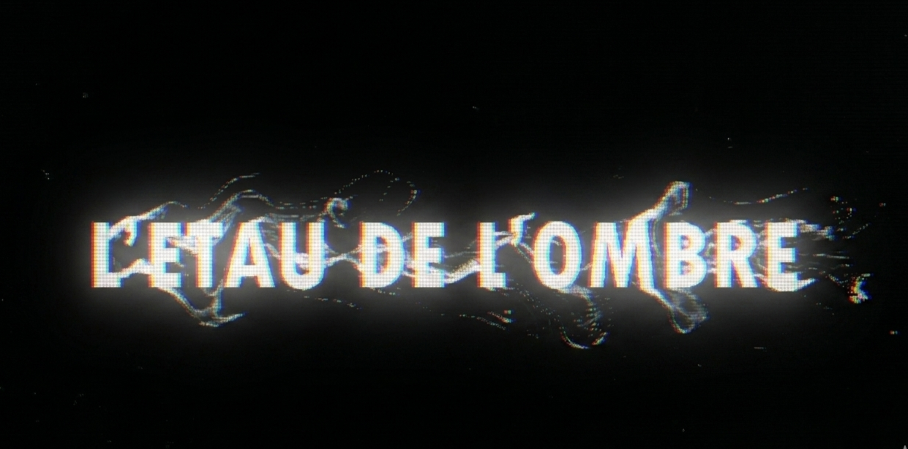
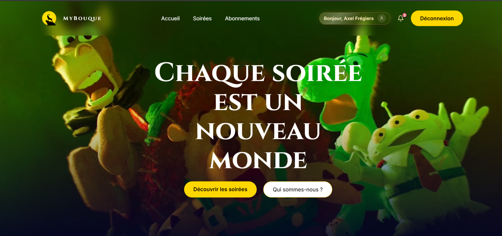
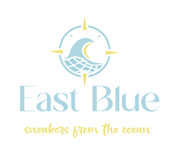

Axel Frégiers
Étudiant en B.U.T. Métiers du Multimédia et de l'Internet
À propos de moi
Actuellement étudiant en B.U.T. Métiers du Multimédia et de l'Internet, je me passionne pour le développement web, le cinéma et la création d'interfaces numériques interactives. Curieux et rigoureux, j'aime lier l'esthétique du Front-End à la logique du Back-End pour concevoir des projets aussi ludiques qu'utiles.
Grand passionné de l'univers High-Tech, je suis de très près l'actualité des produits innovants et des nouvelles technologies. C'est un intérêt que je nourris au quotidien, notamment en suivant des créateurs de contenu inspirants comme la chaîne Léo - TechMaker ou encore Milomaker.
Depuis mon adolescence, je suis également passionné de hardware, monter mes propres configurations PC est l'un de mes passe-temps favoris, entre choix des composants, benchmarks et recherche des meilleures performances.
Le seul vrai pouvoir révolutionnaire, c’est le pouvoir d’inventer.
Mon Parcours
🎓 Cursus Scolaire
B.U.T. Métiers du Multimédia
IUT de Tarbes
Développement web (Front & Back), design d'interfaces (UX/UI) et création de contenus.
Baccalauréat Général
Spécialités Cinéma, SNT & SES
Initiation à l'algorithmique avec Scratch et développement de petits projets en Python.
Brevet des Collèges
Option Anglais Euro
Premiers pas dans l'univers de la 3D avec le logiciel SketchUp à travers un projet de technologie.
💼 Expériences & Jobs
Job d'été - Caissier
Carrefour Market — Villevieille
Encaissement fluide, gestion optimale des flux clients, rigueur de caisse et adaptabilité.
Job d'été - Serveur
Restaurant Sansavino — Sommières
Service en salle de haute exigence, gestion du stress en plein rush et relation client optimisée, capacité à adapter sa communication à un public international.
Stage d'observation - En immersion
École National de Police — Nîmes
Découverte des métiers de la sécurité sur une période d'une semaine, initiation aux techniques de self-défense et aux gestes de premiers secours. Observation des protocoles de gestion du stress et mise en situation de tir avec un moniteur qualifié. Renforcement de la rigueur et de la discipline.
Mes Compétences
 Français
95%
Français
95%
 Anglais
80%
Anglais
80%

Allemand 50%Mes Projets
Découvrez un aperçu des projets que j'ai réalisés dans le cadre de mes études en MMI ou de mes passions personnelles.

Développement JeuDungeon Adventure
Jeu de labyrinthe 2D conçu sur Scratch en équipe, où j'ai assuré le rôle de programmeur principal, gameplay complet, système de vies, inventaire et sprites animés réalisés sur Pixel Studio dans un style Game Boy Advance.

Modélisation 3DModélisation Low poly
Scènes low poly modélisées sur Blender, une forêt avec Salamèche et Bulbizarre entièrement modélisés avec travail de lumière, et un personnage avec armature complète en cours d'animation.

UI/UX DesignIdentité Visuelle Fictive
Maquette d'application mobile de voyage et pèlerinage conçue sur Figma, parcours utilisateur, wireframes, prototypage interactif et système de gamification avec points et récompenses partenaires.

Cinéma & AudiovisuelL'étau de l'ombre
Réalisation d'un court-métrage en 12 heures chrono. Une véritable course contre la montre exigeant une gestion du temps rigoureuse et le respect strict du scénario, traduit fidèlement à l'écran à travers l'intégralité de chaque plan.

Développement WebMyBouque
Application web full-stack de gestion de soirées cinéma thématiques, vote Borda, inscription, authentification bcrypt, interactions AJAX et tableau de bord administrateur.

Design GraphiqueEast Blue
Création d'une identité visuelle complète pour une startup de sneakers éco-responsables fabriquées à partir de filets de pêche recyclés, logo, moodboard, persona UX et charte graphique.
Mes Centres d'intérêt
High-Tech & Innovation
Suivi quotidien de l'actualité tech avec TheiCollection ou Jojol sur les nouveaux gadgets, et FrenchHardware sur les composants PC et des innovations qui façonnent le futur numérique.
Création & Vidéo
Passionné de culture web (YouTube/TikTok/Twitch) et inspiré par la CacaboxTV, je possède une solide culture des mèmes. L'univers du streaming et du format court n'a aucun secret pour moi. J'aime explorer l'humour décalé et le montage loufoque pour capter l'attention là où on ne l'attend pas.
Jeux Vidéo & Univers Ludiques
Passion pour le gaming, friand de MMO comme Dofus, ainsi que de jeux inspirés d'univers tels que Pokémon et Dragon Quest. Mais aussi pour l'envers du décor la conception d'univers interactifs et les mécaniques de jeu.
Cinéma & Audiovisuel
Sensibilisé aux techniques de cadrage, de montage et de narration visuelle grâce à ma spécialité au lycée, j'affectionne particulièrement le cinéma d'animation et les comédies horrifiques, avec une forte admiration pour l'univers de Tim Burton avec L'Étrange Noël de monsieur Jack, Frankenweenie